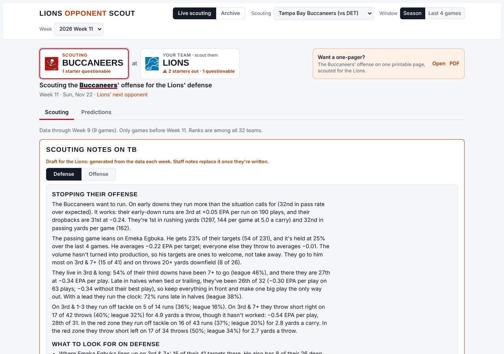

NFL / LIVE / UPDATED NOVEMBER 2026
NFL Scouting Report Website
Weekly opponent scouting for all 32 teams, rebuilt from play-by-play every week.

Overview
My senior thesis asked one question about formation choice across 15 seasons of NFL play-by-play. I wanted to take the same data further and turn it into something a coaching staff could use every week: a scouting report on any opponent that rebuilds itself as the season goes.
Every Tuesday in season, R pulls the latest nflverse play-by-play, schedules, rosters, snap counts and injury reports into DuckDB. A chain of SQL models turns it into one row per play with situation flags, per-game tendencies, season-to-date and last-four-game totals, and league ranks among all 32 teams. An as-of snapshot means a Week 11 report only uses games played before Week 11. Data tests run after the models, and if any of them fails nothing is published, so the last good report stays live. GitHub Actions runs the pipeline, refreshes injuries, lines and weather through game day, and publishes to GitHub Pages.
On offense the site breaks down run and pass lean against what the situation calls for, early downs, third down by distance, the red zone, late-half and score-state splits, where each team runs and throws, who gets the ball and when, and formation tells under center versus shotgun, which carries the thesis question forward. On defense it shows EPA, success rate and yards allowed on runs versus dropbacks by situation, production allowed to receivers, tight ends and backs, the softest and toughest run lanes, blitz rate, box count and coverage.
Each matchup gets scouting notes in two halves, stopping their offense and attacking their defense, plus an attack plan, a printable one-pager and a predictions tab. After every game, a report card grades each call the notes made against what happened.
What a coach gets each week
- Scouting notes that point to specific spots to exploit, such as a hot throw area, a run lean or the softest run lane, chosen once so the notes and the report card grade the same thing.
- Every number shows its sample, like “54 of 231” targets or “on 190 plays”. A “3 things to know” item needs a top or bottom 10% league rank on at least 30 plays.
- A predictions tab with an Elo win probability next to the market’s, locked before kickoff and graded afterward. It shows win probability only, because my backtest found no signal against the spread or total.

Limitations and what’s left
- Public data has no full personnel or coverage charting for the current season. Blitz rate and box count come from FTN charting via nflverse, and man/zone coverage uses last season’s participation data.
- Early in the season samples are small; the site marks them rather than hiding them.
- Notes are drafted from the data each week and replaced by staff notes once those are written.
- Ranks use the current season only. Last season’s rank is shown for context, with a caveat when a team changed play callers.